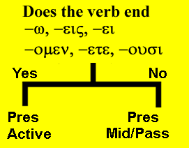

| Greek | Meaning | Notes |
|---|---|---|
| ἄδικος | unrighteous | |
| αἰώνιος | eternal | |
| δίκαιος | righteous | |
| ἕκαστος | each | |
| ἐκβάλλω | I throw out | |
| αἴρω | I take up, take away | emphasis on raising from the ground & carrying |
| ἀποστέλλω | I send (with a message) | |
| βαίνω | I go | i.e., take steps, walk |
| ἀναβαίνω | I go up | |
| καταβαίνω | I go down | |
| δοξάζω | I glorify | |
| ἐσθίω | I eat | |
| κρίνω | I judge | |
| συνάγω | I gather together | |
| μένω | I remain |
Lexical Study
- Greek has a voice which is different from anything in English.
- We already looked at the active voice where the subject is doing the action.
- Then we saw the passive voice where the subject receives the action.
- Now we have the middle voice in which the subject is participating in the results of the action.
- The form of the present indicative middle is exactly the same as the present indicative passive.
- Thus it is sometimes difficult to tell if the verb is passive or middle.
- The context generally reveals this information.
- So consider this sentence:
- οἱ ἄνθρωποι διδάσκονται
- If middle: The men are teaching one another
- If passive: The men are being taught.
- Here's a clue:
- If there is a preposition (usually ὑπὸ or ἐν) or a case (GEN or DAT), then the verb is probably passive because the prepositional phrase indicates the agent who is doing the action to the subject.
- Thus if the sentence were οἱ ἄνθρωποι διδάσκονται ὑπὸ τοῦ κυριοῦ it would be translated as a passive, not middle.
- The middle makes confusing sense as The men teach themselves by the Lord.
- Instead it should be, The men are being taught by the Lord.
- The reflexive middle shows action which is directed at the subject himself as in:
- ὁ ἄνθρωπος ἐγείρεται.
- The man is raising himself up.
- The intensive middle shows that the subject alone is producing the action rather than participating in the action as in:
- διδάσκεται τὴν ἀλήθειαν.
- He [and no one else] is teaching the truth.
- The reciprocal middle is used with a plural subject where there is an interchange of action between each of the members of the subject as in
- οἱ ἄνθρωποι διδάσκονται.
- The men are teaching one another.
MIDDLE VERB FORM
- The middle form uses the same endings as the passive.
- These endings are called the secondary endings.
- They are: -ομαι, -ῃ, -εται, -ομεθα, -εσθε, -ονται
- Example:
- Singular
- λύομαι = I loose myself, I loose for myself
- λύῃ = you loose yourself, you loose for yourself
- λύεται = he (she, it) looses himself, for himself
- Plural
- λυόμεθα = we loose ourselves, for ourselves
- λύεσθε = you loose yourselves, for yourselves
- λύονται = they loose themselves, for themselves
- Singular
VERB IDENTIFICATION
- Because the form of the Present indicative middle is the same as the passive, the rules for verb identification are the same.
- Ask yourself the following questions:
- Does it have the active endings? [-ω, -εις, -ει, -ομεν, -ετε, -ουσι]
- If yes, it is present indicative active.
- These are called primary endings.
- Does it have one of the middle/passive endings? [-ομαι, -ῃ, -εται, -ομεθα, -εσθε, -ονται]
- If yes, then it is present indicative middle/passive.
- These are called secondary endings.
- Does it have the active endings? [-ω, -εις, -ει, -ομεν, -ετε, -ουσι]

Translate the following:
- οἱ ἄνθρωποι λαμβάνονται ἄρτον καὶ καρπόν.
- οἱ μαθηταὶ διδάσκονται τὸν λόγον τῆς ἀληθείας.
- κρίνεται ἐν τῇ παραβολῇ τοῦ προφήτου.
- ὁ μεσσίας συνάγεται τοὺς ὄχλους εἰς τὴν βασιλείαν.
- οἱ πιστοὶ ἀδελφοὶ ἀναβαίνουσι πρὸς τὸ ἱερὸν σὺν τοῖς υἱοῖς τῶν προφητῶν.
- ὁ ἄγγελος ἀποστέλλεται ὑπὸ τοῦ θεοῦ ἐκ τοῦ οἴκου καὶ εἰς τὴν ἔρημον.
- αἴρουσι λίθους καὶ βάλλουσι τοὺς ἀποστόλους ἐκ τοῦ ἱεροῦ εἰς τὴν ὁδόν.
- ἡ φωνὴ τοῦ προφήτου ἀκούεται καὶ πονηροὶ ἄνθρωποι βαίνουσι ἐκ τῆς κακῆς ὁδοῦ εἰς τὴν ὁδὸν ἀγάπης καὶ εἰρήνης.
- οἱ ὄχλοι ἐσθίουσιν ἄρτον καὶ ὁ μεσσίας δοξάζεται.
- ἄνθρωποι τοῦ κόσμου δοξάζονται· δίκαιοι ἄνθρωποι δοξάζουσι τὸν θεόν.
- ἀγαθοὶ ἄνθρωποι διδάσκονται τοὺς νόμους καὶ τὰς ἐντολὰς τοῦ θεοῦ.
- οἱ ἄγγελοι ἀποστέλλονται πρὸς τοὺς υἱοὺς ἀνθρώπων ἐν ταῖς ἐκκλησίαις.
- ὁ θεὸς ἀποστέλλει τὸν μεσσίαν εἰς τὸν κόσμον καὶ ὁ μεσσίαςπέμπει δῶρα τῆς ἀγάπης τοῖς μαθηταῖς.
- αἱ γραφαὶ ἀναγινώσκονται, ἄνθρωποι σώζονται, καὶ οἱ νεκροὶ ἐγείρονται.